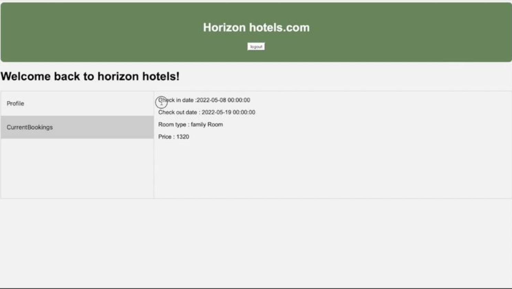
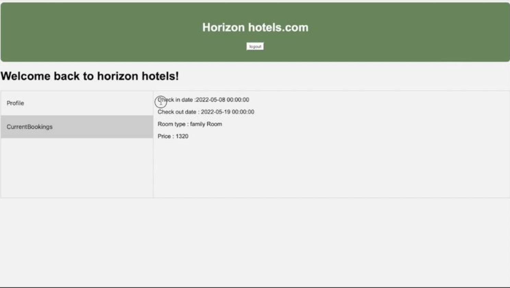

Toggle Dark Mode

Computer science graduate with a keen interest in emerging technologies. I have gained experience in various programming languages such as Python, C++ and some AI libraries like TensorFlow through coursework and personal projects, which helped me develop a solid understanding of algorithms, data structures, and development methodologies.
University of the west of England
Trained DNN, SVM, and Random Forest models on historical football match data to predict match outcomes. Focused on data cleaning, feature engineering, and cross-validation for model tuning.


Built a GRU-based deep learning model to predict Remaining Useful Life (RUL) from multi-sensor engine data. Achieved MAE: 17.84 and R²: 0.83. Deployed via Flask for real-time predictions.
Developing a YOLOv8-based computer vision system to detect wrong-way driving in real time. Integrating with Flask/FastAPI for API-based inference.
Built an AI-powered Streamlit app that compares a CV with a job description using NLP. Extracts keywords, scores similarity using TF-IDF & Cosine Similarity, and recommends upskilling resources via HuggingFace models.
Developed a full-stack web application to showcase football player market values, with a modern UI/UX inspired by TransferMarket. Served as the frontend to ML prediction models.
Python and Tkinter-based railway booking system with admin login, schedule management, and ticket booking confirmation.

Designed and implemented a hotel booking system with sign-up/login, profile management, booking flow, and admin panel using full-stack technologies.
 


Python
Machine Learning
Deep Learning
Artificial Intelligence
Neural Networks
Natural Language Processing
Data Visualization
SQL
Data Manipulation (Pandas)
NumPy
Scikit-learn
TensorFlow
Jupyter Notebooks
Matplotlib / Seaborn
C++
Version Control (Git)
Flask / FastAPI
SQLAlchemy
Tkinter
HTML / CSS / JavaScript
Full-Stack Development
UML & Software Design
Agile Methodologies
Time Management
Problem Solving